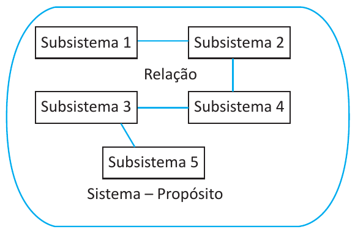

Questões oficiais objetivas e discursivas
Tópicos Especiais em Sistemas de Informação
Prof. Dr. Diogo Francisco Borba Rodrigues
17 questões objetivas e 2 discursivas oficiais de Sistemas de Informação. Selecione os itens conforme o tempo disponível; o conjunto funciona também como banco de revisão.
Os conteúdos adicionais incluem virtualização, serviços em nuvem, IPv4, CMMI, acordos de serviço, segurança, desempenho e legibilidade. Os gabaritos aparecem ao final.
As questões 17/2017 e discursiva 3/2021 foram retiradas porque constam das aulas anteriores.
| Conceito | Definição | Exemplo didático |
|---|---|---|
| Dado | Registro elementar de uma observação. | Uma nota registrada: 7,0. |
| Informação | Dados organizados em um contexto útil. | Média de notas de uma turma. |
| Conhecimento | Interpretação que apoia compreensão e ação. | Análise fundamenta uma intervenção pedagógica. |
Tácito: experiência e saber pessoal. Explícito: conhecimento formalizado em documentos, modelos ou instruções.
| Termo | Significado para a análise |
|---|---|
| ERP | Sistema integrado de gestão dos processos da organização. |
| WMS | Sistema de gerenciamento das operações de armazém e estoque. |
| Parametrização e customização | Configurar opções existentes ou modificar o sistema para necessidades não atendidas pelos parâmetros. |
| Governança de TI | Direção e acompanhamento da TI em relação aos objetivos, responsabilidades e riscos do negócio. |
| Conceito | Definição operacional |
|---|---|
| Escopo | Trabalho e características que o projeto deve contemplar. Requisitos ajudam a especificá-lo. |
| Verificação | Avaliação da conformidade com requisitos especificados. |
| Validação | Avaliação da adequação às necessidades e ao uso pretendido. |
| Segurança da informação | Proteção apoiada em pessoas, processos e tecnologia, com responsabilidades definidas. |
O momento da descoberta de uma falha pode ser diferente do momento em que sua causa surgiu.
| Conceito | Como interpretar |
|---|---|
| Cliente-servidor | Clientes solicitam serviços e servidores respondem às solicitações. |
| Pilha / LIFO | O último elemento inserido é o primeiro retirado. |
| Fila / FIFO | O primeiro elemento inserido é o primeiro retirado. |
| Sistema e subsistema | Partes interdependentes se relacionam para cumprir um propósito. |
A política de acesso de uma estrutura é diferente de sua implementação em memória.
A expressão Big Data refere-se a um conjunto de técnicas e ferramentas para o armazenamento e manipulação de conjuntos de dados muito grandes. Tecnologias tradicionais, como bancos de dados relacionais e ferramentas de processamento sequencial, não suportam o vasto volume de dados. O Big Data possui quatro características marcantes: volume, variedade, velocidade e veracidade.
Disponível em: https://sol.sbc.org.br/livros/index.php/sbc/catalog/. Acesso em: 13 jun. 2020 (adaptado).
Considerando as informações apresentadas e o conjunto de características marcantes do Big Data, avalie as afirmações a seguir.
É correto apenas o que se afirma em
A forma como o conhecimento se apresenta pode ser classificada em tácita e explícita. O conhecimento tácito é desenvolvido pelas experiências e relacionamentos pessoais ou profissionais de um indivíduo, não é mensurável e é pessoal. O conhecimento explícito é a disseminação, aplicação, transmissão, de maneira formal, do conhecimento adquirido.
TAKEUCHI, H.; NONAKA, I. Gestão do conhecimento. Porto Alegre: Bookman, 2008 (adaptado).
Considerando o desenvolvimento de software e a utilização do conhecimento tácito e explícito, avalie as afirmações a seguir.
É correto o que se afirma em
Uma empresa iniciou um projeto para implantação de um ERP (Enterprise Resource Planning), com o objetivo de aumentar a produtividade e elevar seu patamar tecnológico. O sistema que era utilizado anteriormente foi desenvolvido pela própria empresa e não mais atendia às necessidades operacionais. A empresa optou por implantar um módulo WMS (Warehouse Management System), que se ocupa de tarefas relacionadas ao gerenciamento das operações de estoques. O módulo foi parametrizado e customizado de acordo com as necessidades identificadas na fase de planejamento do projeto de implantação.
A partir do caso apresentado, avalie as asserções a seguir e a relação proposta entre elas.
I. Customização é a modificação de um sistema ERP para que ele possa adaptar-se a determinada situação empresarial que não pode ser reproduzida por parâmetros preexistentes.
PORQUE
II. A parametrização é o processo de determinação do comportamento de um sistema ERP por meio da definição dos valores de parâmetros disponibilizados por ele, que são variáveis internas.
A respeito dessas asserções, assinale a opção correta.
A lei Sarbanes-Oxley (SOX), publicada em agosto de 2002, após escândalos financeiros acontecidos em companhias americanas abertas nos Estados Unidos, objetiva proteger os investidores, no mercado de capital americano, de fraudes contábeis e financeiras. Entre os diversos controles que essa lei regula, destacam-se aqueles que devem garantir a integridade de informações contábeis e financeiras. Tal crise despertou a importância da temática Governança de Tecnologia da Informação (TI) para as organizações, de modo a serem considerados requisitos legais a troca de informações entre parceiros estratégicos das organizações e a formalização de uma política de segurança da informação, entre outros. Desta forma, cabe destacar que o objetivo da Governança de TI em uma organização é alinhar a TI aos requisitos de negócio, de modo a garantir a continuidade dos serviços prestados, bem como a minimização da exposição do negócio aos riscos de TI.
FERNANDES, A.A.; ABREU, V. D. Implantando a governança de TI: da estratégia à gestão dos processos e serviços. Rio de Janeiro: Brasport, 2012 (adaptado).
A respeito desse contexto, avalie as afirmações a seguir.
É correto apenas o que se afirma em
Tendo em vista que a informação está entre os bens mais importantes para uma organização, um dos fatores decisivos na definição de uma rede de computadores é a segurança da informação. Para garantir tal segurança e evitar qualquer desvio ou ação que possa modificar essas informações sem autorização ou, ainda, para protegê-las de ataques cibernéticos, são necessários planejamentos e estruturação da rede e de seus acessos.
FONTES, E. Praticando a segurança da informação. 1. ed. São Paulo: BRASPORT, 2008 (adaptado).
Considerando o texto, avalie as afirmações a seguir.
É correto o que se afirma em
O guia PMBOK (Project Management Body of Knowledge) orienta a gestão de projetos considerando que processos devem ser executados nas diversas fases do gerenciamento, a saber: iniciação, planejamento, execução e encerramento.
Em um determinado projeto, foi desenvolvido um sistema segundo o modelo de ciclo de vida em cascata, cujas atividades são realizadas sequencialmente e sem sobreposição. Na atividade de homologação do sistema, às vésperas da data planejada de sua implantação, um usuário identificou a inviabilidade de uma funcionalidade testada, pois alguns requisitos básicos não haviam sido considerados durante o levantamento dos requisitos. A alteração que se mostrou necessária atrasou o projeto em relação à linha de base do plano do projeto.
Segundo o PMBOK, pode-se considerar que a falha foi originada na fase de
A tendência atual de desenvolver aplicações que possam ser utilizadas em nuvem otimiza o desempenho de máquinas locais, munidas de poucos recursos computacionais, em uma rede e garante a possibilidade desses computadores utilizarem outros recursos computacionais de maior desempenho, bem como a inserção de novos hosts neste ambiente computacional, sem comprometimento do sistema como um todo.
Esse cenário pressupõe a utilização de sistema operacional com
O coordenador geral de um comitê olímpico solicitou a implementação de um aplicativo que permita o registro dos recordes dos atletas à medida que forem sendo quebrados, mantendo a ordem cronológica dos acontecimentos, e possibilitando a leitura dos dados a partir dos mais recentes.
Considerando os requisitos do aplicativo, a estrutura de dados mais adequada para a solução a ser implementada é
Uma empresa deseja se reposicionar no mercado e, para isso, precisa ampliar sua capacidade de atendimento em serviços computacionais. Atualmente, os sistemas infraestruturais e de informação rodam sobre Sistemas Operacionais de diversas versões e distribuições, tanto na plataforma Windows, quanto na plataforma Linux. Uma consultoria especializada propôs a migração do parque de servidores físicos para servidores virtuais, adotando-se o tipo II, ou seja, os Monitores de Máquina Virtual serão executados como processos dos Sistemas Operacionais hospedeiros, mantendo-se, a princípio, os Sistemas Operacionais do parque original como visitantes e adotando-se um único Sistema Operacional como hospedeiro. Sobre o modelo proposto pela consultoria, avalie as afirmações a seguir.
I. Os Sistemas Operacionais visitantes serão infectados se algum malware se instalar no Sistema Operacional hospedeiro. II. A empresa, após a virtualização, economizará recursos financeiros na aquisição de servidores e obterá mais eficiência no consumo de recursos. III. A empresa não poderá manter a mesma estrutura de Sistemas Operacionais físicos no sistema virtualizado do tipo II. IV. A recuperação do Sistema Operacional virtual é mais simples e rápida, quando comparada ao sistema físico. É correto apenas o que se afirma em
A I e III.
B II e III.
C II e IV.
D I, II e IV.
E I, III e IV.
Os projetos são um esforço temporário empreendido para criar um produto, serviço ou resultado único. PMI. Guia PMBOK: Um Guia para o Conjunto de Conhecimentos em Gerenciamento de Projetos. 6. ed. Pennsylvania: PMI, 2017 (adaptado). Com base na definição de projetos apresentada, avalie as afirmações a seguir.
I. A criação de um produto único, ou um item do produto, pode representar um possível projeto. II. Um serviço único, ou uma capacidade de realizar um serviço, pode representar um possível projeto. III. A operação de um software, mesmo que repetidas vezes, pode representar um possível projeto. IV. Uma combinação única de um ou mais produtos, serviços ou resultados, pode representar um possível projeto. É correto apenas o que se afirma em
A I e III.
B II e III.
C II e IV.
D I, II e IV.
E I, III e IV.
A computação em nuvem é caracterizada por um conjunto de recursos virtualizados e disponibilizados via internet. Os recursos podem ser configurados dinamicamente, fornecendo a base para a escalabilidade sob demanda. O vínculo com a computação em nuvem geralmente se baseia em um modelo de pagamento por uso, no qual as garantias são oferecidas por meio de SLAs (acordos de nível de serviço) personalizados. Os provedores de computação em nuvem oferecem essas camadas aos clientes por meio de várias interfaces (incluindo ferramentas de linha de comando, ambientes de programação e interfaces Web), levando a três tipos diferentes de serviços: • Infraestrutura como Serviço (IaaS); • Plataforma como Serviço (PaaS); • Software como Serviço (SaaS). VAQUERO, L. M. et al. A Break in the Clouds: Towards a Cloud Definition. ACM SIGCOMM Computer Communication Review, 2009 (adaptado). Considerando as informações apresentadas, avalie as afirmações a seguir. I. O uso do IaaS é recomendado para pequenas e médias empresas cujo crescimento da infraestrutura não acompanha sua expansão, bem como para empresas que possuem demandas oscilantes, como lojas virtuais. II. O uso de IasS e SaaS não é recomendado quando há restrições legais quanto ao armazenamento ou terceirização dos dados, como ocorre muitas vezes em empresas e autarquias públicas. III. O uso de SaaS é recomendado para grandes empresas que estão dispostas a investir em grande escala na compra de licenças. IV. O uso de PaaS não é indicado para empresas que possuem um time próprio de desenvolvedores. É correto apenas o que se afirma em
A I e II.
B I e III.
C III e IV.
D I, II e IV.
E II, III e IV.
O funcionamento da internet está baseado no roteamento de pacotes do tipo IP (Internet Protocol). Com relação a este protocolo e aos equipamentos utilizados para roteá-lo, avalie as afirmações a seguir.
I. Um pacote IPv4 pode ficar em loop indefinidamente, caso haja erros nas tabelas de roteamentos dos roteadores. II. Em uma intranet com mais de um roteador, o sequenciamento de pacotes IPv4 é garantido por meio do campo TTL. III. Um pacote IPv4 pode ser fragmentado por qualquer dispositivo na rede, se o tamanho máximo de MTU da rede onde os pacotes vão transitar for menor que o tamanho do pacote a ser transmitido. IV. Ao enviar um pacote IPv4, a máscara de subrede é utilizada pelo computador ou roteador para identificar se o computador de destino pertence a esta mesma subrede. É correto apenas o que se afirma em
A I e II.
B I e III.
C III e IV.
D I, II e IV.
E II, III e IV.
A versão por estágios do Modelo Integrado de Maturidade em Capacitação (CMMI - Capability Maturity Model Integration) permite que o desenvolvimento de sistemas e processos de gerenciamento de uma organização seja avaliado e que a ele seja atribuído um nível de maturidade. SOMMERVILLE, I. Engenharia de Software. 9. ed. São Paulo: Pearson Prentice Hall, 2011 (adaptado). Considerando a informação apresentada, suponha que uma determinada organização tenha processos de gerenciamento bem caracterizados, descritos por padrões, além de utilizar ferramentas e métodos estabelecidos. De acordo com a versão por estágios do CMMI, esta organização possui os requisitos mínimos necessários para atingir qual nível de maturidade?
A Inicial.
B Definido.
C Gerenciado.
D Em otimização.
E Gerenciado quantitativamente.
O gerenciamento de serviços de TI tem como objetivo a entrega e o suporte de serviços de TI focados nas necessidades dos clientes e alinhados à estratégia de negócio da organização. Esta visa alcançar custos e desempenho desejados pelo cliente, por meio de acordos de nível de serviço estabelecidos internamente entre a área de TI e as demais áreas envolvidas na cadeia do serviço. MAGALHÃES, L. et al. Gerenciamento de Serviços de TI na Prática: Uma abordagem com base na ITIL. São Paulo: Novatec, 2007 (adaptado).
A partir das informações do texto, avalie as asserções a seguir e a relação proposta entre elas. I. O acordo de nível de serviço é um contrato firmado entre o provedor de serviços de TI e seus clientes, que incluem detalhes de quais serviços serão fornecidos. PORQUE II. Os serviços devem ser monitorados quanto ao desempenho e disponibilidade no nível em que for acordado entre as partes.
A respeito dessas asserções, assinale a opção correta.
A As asserções I e II são proposições verdadeiras, e a II é uma justificativa correta da I.
B As asserções I e II são proposições verdadeiras, mas a II não é uma justificativa correta da I.
C A asserção I é uma proposição verdadeira, e a II é uma proposição falsa.
D A asserção I é uma proposição falsa, e a II é uma proposição verdadeira.
E As asserções I e II são proposições falsas.
Em conformidade com a ABNT NBR ISO/IEC 27002 (2013), segurança da informação envolve práticas e processos de proteção e salvaguarda dos ativos da informação e de tecnologias da informação. Está amparada pelos preceitos de integridade, disponibilidade e confidencialidade. Segurança da informação também pode ser entendida como uma área do conhecimento dedicada à proteção de ativos da informação contra acessos não autorizados e alterações indevidas. Além disso, ela aborda a proteção da informação contra vários tipos de ameaças, implicando na possível continuidade do negócio, na minimização do risco e na maximização do retorno sobre os investimentos e oportunidades. ASSOCIAÇÃO BRASILEIRA DE NORMAS TÉCNICAS. aBNt NBR iSO/iEC 27002. Rio de Janeiro: ABNT, 2013 (adaptado). Considerando o texto apresentado, avalie as afirmações a seguir.
I. A integridade da informação tem como objetivo garantir a acessibilidade da informação. II. A disponibilidade garante que os autorizados a acessarem a informação possam fazê-lo sempre que necessário. III. A confidencialidade da informação é a garantia de que somente pessoas autorizadas terão acesso a ela, protegendo-a de acordo com o grau de sigilo do seu conteúdo. IV. A legalidade é a garantia de que a informação foi produzida em conformidade com a lei. V. A autenticidade é a garantia de que em um processo de comunicação os remetentes sejam exatamente quem dizem ser. É correto apenas o que se afirma em
A I e II.
B I e IV.
C II, III e V.
D I, III, IV e V.
E II, III, IV e V.
Suponha que um gestor de TI de determinada empresa está avaliando o desempenho de infraestrutura com o objetivo de evitar despesas desnecessárias em aumento de capacidade. Ele identifica que o servidor da base de dados do sistema mais solicitado realiza uma média de 4,5 operações de I/O por transação, sendo que cada I/O realizado no disco consome em média 20 ms. Em uma hora, ele observa que 7 200 transações foram executadas. Com base nas informações apresentadas, o gestor concluiu que o throughput médio do disco (em transações por segundo) e a utilização média do disco (em valor percentual) são, respectivamente,
A 2 e 1,8.
B 2 e 18.
C 9 e 2.
D 9 e 18.
E 15 e 9.
A legibilidade diz respeito às características que possam dificultar ou facilitar a leitura das informações textuais, como, por exemplo: brilho do caractere, contraste letra/fundo, tamanho da fonte, espaçamento entre palavras, espaçamento entre linhas, espaçamento de parágrafos, comprimento da linha, entre outros. CYBIS, W.; BETIOL, A. H.; FAUST, R. Ergonomia e Usabilidade: Conhecimentos, Métodos e Aplicações. 2. ed. São Paulo: Novatec Editora Ltda. 2010 (adaptado). Acerca das características e importância da legibilidade, avalie as afirmações a seguir. I. Em uma interface legível, o texto longo deve ser lido rapidamente e deve aparecer em letras maiúsculas e minúsculas misturadas naturalmente, com maiúsculas no início de frases e nomes próprios. II. Os textos longos devem ser apresentados em linhas com menor comprimento possível e com o mínimo contraste efetivo com o fundo. III. O texto que deve ser lido por idosos ou pessoas com problemas de visão aparece em letras claras sobre um fundo escuro, pois, para esse público, o fundo brilhante pode ofuscar completamente as letras escuras. É correto o que se afirma em
A II, apenas.
B III, apenas.
C I e II, apenas.
D I e III, apenas.
E I, II e III.
Cada comando precisa de uma resposta identificável. “Citar”, “explicar” e “definir” pedem produções diferentes.
| Comando | O que deve aparecer |
|---|---|
| Citar exemplos | A quantidade solicitada e exemplos coerentes com o conceito. |
| Explicar | Uma relação compreensível, com justificativa e conexão ao contexto. |
| Definir | O significado do conceito, distinguindo-o dos demais. |
O conceito de sistemas pode ser enunciado por uma definição muito simples, porém de grande relevância. A ideia essencial da Teoria Geral de Sistemas é estabelecer uma nova visão da realidade, que transcenda os problemas tecnológicos das várias ciências e tenha generalidade suficiente para ser transdisciplinar.
Um sistema é um conjunto de elementos interpendentes e interagentes, com vistas a atingir o mesmo objetivo. A função básica de um sistema é a de converter os insumos retirados de seu ambiente, em produtos de natureza qualitativa ou quantitativa diferente de seus insumos, para serem, então, devolvidos ao seu ambiente.
MARTINELLI, D. P . et al. Teoria Geral dos Sistemas. São Paulo: Saraiva, 2012 (adaptado).
A figura a seguir é uma representação genérica de um sistema.

Considerando as informações apresentadas, redija um texto sobre sistema de informação. Em seu texto, explique o que é subsistema e defina os conceitos de relação e de propósito. (valor: 10,0 pontos)
Uma loja pretende desenvolver um sistema cujo processo de modelagem utilizará UML (Unified Modeling Language ). Essa empresa tem dois tipos de colaboradores, o atendente e o gerente. A principal atividade a ser automatizada pelo sistema é o processamento de vendas, cuja execução é altamente complexa. Dessa forma, a modelagem deve ser realizada de maneira estruturada e organizada, tendo como foco a sua reutilização em diferentes contextos. As vendas são realizadas quase integralmente por atendentes, entretanto, caso haja grande quantidade de clientes, os gerentes também podem processar vendas, por exemplo. O processamento de vendas pode ser realizado considerando duas modalidades de pagamento: a prazo ou à vista, todavia, independentemente da forma de pagamento, há um conjunto comum de ações que sempre são realizadas.
As compras a prazo englobam dois modos de pagamento (via cartão de crédito e via boleto) que possuem ações comuns, mas que se diferem nas ações finais. Para algumas formas de processamento de vendas é aplicado um desconto sobre o valor total. O desconto deve ser aplicado sempre que o pagamento for realizado à vista ou quando o pagamento for realizado via boleto com parcelamento em até seis vezes. Entretanto, a loja oferece como forma de pagamento boleto com parcelamento em até doze vezes. No processamento de vendas, após a confirmação do pagamento, é necessário emitir a nota fiscal dos produtos. Apenas em circunstâncias em que algum dos produtos vendidos não possa ser retirado na loja, deve ser possível solicitar a entrega pelo sistema.
Considerando a situação apresentada no texto, faça o que se pede nos itens a seguir.
a) Indique o tipo de relacionamento que, de acordo com a linguagem UML, permite representar o fato de atendentes e gerentes poderem realizar as mesmas atividades. (valor: 3,0 pontos)
b) Elabore um diagrama de caso de uso completo da UML para esse sistema, identificando os atores, os casos de uso e os relacionamentos. (valor: 7,0 pontos)
Antes de conferir, registre suas respostas e o grau de segurança em cada uma.
As letras seguem os gabaritos definitivos do Inep. Os comentários explicativos são didáticos. As discursivas têm o padrão oficial identificado e separado dos exemplos de resposta.
I, II e IV são corretas segundo o gabarito. A afirmação III troca a necessidade de resposta oportuna por alta latência. Latência é o atraso até obter a resposta. Na explicação atual, o formato depende da representação: sensores podem produzir registros estruturados ou semiestruturados. O exemplo da prova não cria uma classificação universal por dispositivo.
Gabarito oficial · comentário didático
Somente I é correta. Conhecimentos tácitos e explícitos podem participar de várias etapas do trabalho. As afirmações II e III impõem restrições indevidas. A experiência do profissional e a documentação apoiam também testes, manutenção e decisões de projeto.
Gabarito oficial · comentário didático
As duas definições são verdadeiras. A segunda descreve a parametrização, mas não explica causalmente por que a customização modifica um ERP. A distinção entre conceitos não torna uma definição justificativa lógica da outra.
Gabarito oficial · comentário didático
I, III e IV são corretas. A governança relaciona a TI aos requisitos do negócio, incluindo controles e integração entre organizações. II reduz indevidamente a segurança à infraestrutura de servidores: a proteção também envolve processos, pessoas e outros ativos. A questão utiliza o contexto e a terminologia da edição de 2017.
Gabarito oficial · comentário didático
II e IV são corretas. I erra ao restringir a responsabilidade à TI. III erra ao tratar a conduta ética como substituta de controles e investimentos. Pessoas, processos e tecnologia precisam contribuir conjuntamente.
Gabarito oficial · comentário didático
A falha tem origem em requisitos não considerados e, portanto, no escopo. O atraso é consequência. A data em que o problema foi descoberto não identifica a etapa em que sua causa surgiu. O gabarito da edição é E, conforme a terminologia histórica do item.
Gabarito oficial · comentário didático
O cenário enfatiza máquinas clientes que solicitam recursos ou serviços a servidores. Por isso, o gabarito oficial é D. Essa descrição não significa que toda computação em nuvem exige uma única arquitetura interna de kernel.
Gabarito oficial · comentário didático
A leitura a partir do registro mais recente corresponde à política LIFO, representada pela pilha na alternativa C. O original usa a palavra “fila” dentro dessa alternativa, mas a política descrita é de pilha. A política de acesso difere da implementação: pilhas também podem usar arrays.
Gabarito oficial · comentário didático
Espera-se que o respondente não deixe de mencionar uma definição para os seguintes itens: subsistema, relação e propósito. Assim como deve estabelecer a relação entre eles, demonstrando sua capacidade de análise dos aspectos funcionais e estruturais dos sistemas.
Para a definição de subsistema espera-se que o respondente explique que os sistemas são compostos de elementos que podem ser identificados de forma independente uns dos outros, embora sejam partes constituintes do sistema, os elementos têm existência e identidade próprias e geralmente resolvem parte do problema do sistema.
Para relação espera-se que o respondente apresente que este componente faz a ligação de todos os subsistemas assim como estabelece interações ou relações dinâmicas entre os elementos. As relações são o que tornam o sistema mais do que a simples soma dos seus elementos constituintes. Por meio das interações e relações dinâmicas, os elementos colaboram uns com os outros para produzir um sistema que apresente um propósito que seus elementos independentes isoladamente não seriam capazes de exibir.
E para o propósito espera-se que o respondente explique que os sistemas têm um objetivo ou propósito, sua função principal, para que foi criado, seria os objetivos econômicos, políticos e/ou sociais do sistema. O propósito do sistema revela fatos decisivos acerca da sua identidade. A identidade do sistema é um dos seus aspectos mais importantes porque, se os sistemas buscam a sobrevivência, eles o fazem sempre para manter sua integridade, afirmar e reafirmar a sua identidade.
Um sistema de informação reúne componentes que coletam, processam, armazenam e disponibilizam informações para apoiar atividades e decisões. Em uma escola, matrícula, frequência e avaliação podem funcionar como subsistemas: cada um tem identidade e responsabilidades próprias, mas resolve parte do problema da instituição.
As relações são as interações entre essas partes, como o compartilhamento do cadastro do estudante com a frequência e a avaliação. O propósito é apoiar a gestão acadêmica e a aprendizagem. A integração permite acompanhar a trajetória do estudante de modo que cada módulo isolado não conseguiria.
Resposta conforme o gabarito definitivo do Inep. Discuta cada alternativa à luz das condições do enunciado e da terminologia utilizada na edição de 2021.
Resposta conforme o gabarito definitivo do Inep. Discuta cada alternativa à luz das condições do enunciado e da terminologia utilizada na edição de 2021.
Resposta conforme o gabarito definitivo do Inep. Discuta cada alternativa à luz das condições do enunciado e da terminologia utilizada na edição de 2021.
O gabarito considera III e IV. TTL limita a permanência do pacote e não ordena pacotes. Na prática, a fragmentação IPv4 depende do dispositivo e da flag DF; a expressão “qualquer dispositivo” do original deve ser interpretada no contexto da questão.
Resposta conforme o gabarito definitivo do Inep. Discuta cada alternativa à luz das condições do enunciado e da terminologia utilizada na edição de 2021.
Resposta conforme o gabarito definitivo do Inep. Discuta cada alternativa à luz das condições do enunciado e da terminologia utilizada na edição de 2021.
Resposta conforme o gabarito definitivo do Inep. Discuta cada alternativa à luz das condições do enunciado e da terminologia utilizada na edição de 2021.
7 200 transações por hora equivalem a 2 transações por segundo. Cada transação realiza 4,5 operações de I/O: 9 operações por segundo. A utilização é 9 × 0,020 = 0,18, ou 18%. O gabarito usa 9 e 18, tratando o throughput do disco como operações de I/O por segundo, embora o enunciado diga transações por segundo. Essa inconsistência deve ser discutida, sem confundir as unidades.
O gabarito considera I e III. A II recomenda contraste mínimo e linhas tão curtas quanto possível, prejudicando a leitura. Preferências de contraste variam entre pessoas: o texto histórico não estabelece uma regra universal para toda pessoa idosa.
a) O padrão indica gerente como subclasse e atendente como superclasse. O relacionamento é generalização, admitindo-se também a denominação herança.
b) O padrão aceita variações de representação, desde que mantenham atores, casos de uso e relacionamentos. Consulte os diagramas oficiais no arquivo incluído.
| Tipo de dificuldade | Próximo passo |
|---|---|
| Conceito | Reescrever a definição e contrastar com o conceito confundido. |
| Leitura | Localizar a condição ou restrição ignorada no enunciado. |
| Relação entre asserções | Julgar cada afirmação antes de testar se uma justifica a outra. |
| Resposta discursiva | Conferir quantidade de exemplos, definições e relações pedidas. |
Registro sugerido: item, resposta, confiança e motivo do erro.
Cópias para consulta offline disponíveis na pasta fontes. Enunciados históricos preservados.